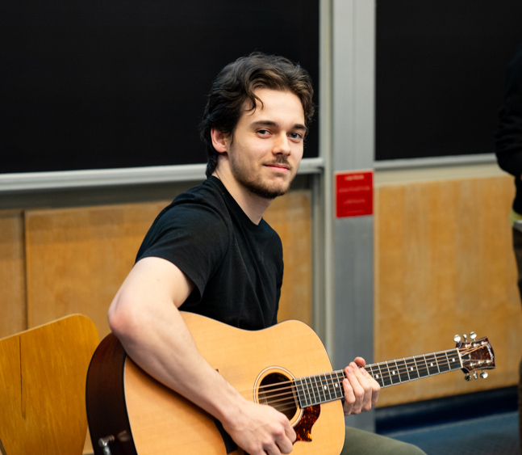

Who am I ?
A 24 years old D.Phil. student at the University of Oxford in the department of Computer Science supervised by Prof. Paul Goldberg. I am currently located in the city of Oxford in the United Kingdom, and this should remain the case at least until June 2029.
I obtained a Master's degree at McGill University in the department of Mathematics and Statistics supervised by Prof. Adrian Vetta. Before that, I completed a Bachelor's degree at McGill University in Honours Mathematics and Computer Science. I am very grateful for growing up and living on the island of Montreal for the first 24 years of my life.

My passions
First and foremost, I am passionate by mathematics. I can spend hours breaking myself into pieces on any problem, whether it is useful or not. I regularly organize problem solving sessions with friends or younger students to train and share methods while having fun.
Playing music is my second biggest source of pleasure. I have covered a couple of pieces I like, mostly in the realm of rock and progressive rock. I also played in several bands and offered a couple amateur shows, all for pleasure! I am always very happy to collaborate on musical projects, whether they are remote or in real life!
For what's remaining, I spend most of my time working out, cooking, programming, playing chess, or biking. I also happen to be somewhat of a geography nerd and can spend a surprising amount of time looking at maps and solving geography puzzles (Yes, I mean puzzles, not quizzes. Yes, that exists.).